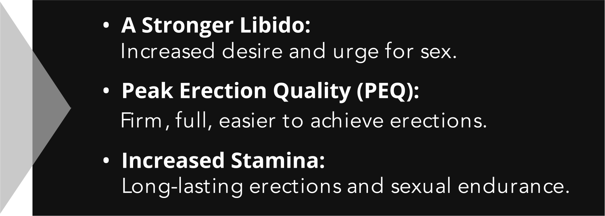
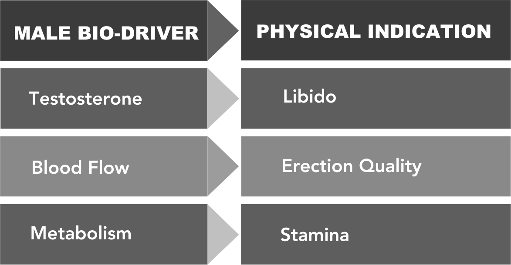

As men age, many medications, medical conditions, and lifestyle factors can trigger the breakdown of the 3 essential men's health bio-drivers – testosterone, blood flow, and metabolism – thus negatively affecting libido (sexual desire), arousal quality (erections), and stamina (sexual performance).
WHAT IS PROVARIN?
PROVARIN is the non-prescription, once-daily tablet to improve energy, brain function, and sexual strength.
WHAT IS SEXUAL STRENGTH?
In clinical terms, a man's sexual strength is determined by the combined quality of his libido, erections, and sexual stamina. Each of these sexual health markers is fueled by an essential, underlying male biological factor, or bio-driver:
FOR SEXUAL STRENGTH TO BE AT ITS PEAK, ALL 3 BIO-DRIVES MUST FUNCTION AT HEALTHY, OPTIMAL LEVELS.
HOW PROVARIN WORKS
PROVARIN works by safely and effectively addressing all 3 bio-drivers responsible for a man's energy, brain functions, sexual strength, and overall health.
Increases Testosterone – as a man ages, his testosterone levels will naturally decline. Even normal testosterone levels in laboratory testing can be sub-optimal. PROVARIN helps increase the build-up and retention of free testosterone in the body for a stronger libido, improved erectile function, and better overall sexual performance. Optimizing testosterone can also help improve lean muscle mass, fat distribution, bone density, cognitive function, and mood.
Stimulates Blood Flow – cardiovascular health is a major factor in general wellness and a fulfilling sex life. Nitric oxide dilates the blood vessels in the body, from the heart to the pelvic floor. Maximizing nitric oxide production can reap a variety of benefits, from healthy blood pressure levels to firmer erections. PROVARIN works to stimulate nitric oxide production and the oxygenated blood flow needed to achieve fast, firm erections and Peak Erection Quality (PEQ).
Accelerates Metabolism – a healthy metabolism means more efficient energy production. The body’s antioxidant systems are taxed by everything from environmental pollutants to poor diet choices. Lifestyle factors and age slow the energy pathways and leave a man feeling sluggish and dull. PROVARIN helps accelerate basal metabolic rate (BMR) and improve efficiency for long-lasting erections, increased stamina, acuity, brain health, and sexual capacity.
NATURALLY POWERFUL
PROVARIN is a clinical-grade, 100% plant-based bioceutical made exclusively from select extracts. It is non-hormonal, drug-free, and contains no genetically modified organisms (GMOs).
Oat Straw Extract – Used in Asian medicine to increase testosterone, oat straw also provides other benefits such as anti-depressant properties, decreased irritability, and improved energy levels and vigor. It gives you the daily energy you need without the crash and insomnia.
Beet root – High in antioxidants, several studies show that beet root improves oxygenation of active tissues throughout the body and increases muscle endurance. Beet root is also packed with vitamins that improve energy and stamina,, raise nitric oxide levels, and increase peripheral blood flow for longer-lasting erections and sexual energy.
Saw Palmetto Fruit Extract – Found to improve cardiovascular health, Saw Palmetto is not only healthy for your heart, but it also increases nitric oxide, the blood-dilation chemical responsible for healthy blood pressure, which leads to stronger and longer-lasting erections.
Kale leaf – Packed with vitamin K, polyphenols, vitamin C, and other antioxidants such as CoQ10, kale is ideal for shedding excessive weight, improving blood flow to your brain for sharper and stronger memory, and increasing nitric oxide levels, which is essential to erectile function, response, energy level, stamina, and alertness.
Fenugreek Seed Extract – Proven to increase testosterone after only 8 weeks, Fenugreek has also been shown to improve blood sugar and cholesterol in diabetic patients. The combination of these benefits has been shown to enhance libido and promote a healthier sex drive for men over 50.
L-citrulline malate –This amino acid is a potent blood vessel dilator and oxygenator that promotes faster and fuller erections where even prescription medications alone have failed. L-citrulline is effective at raising nitric oxide levels, which increases sexual energy and stamina, reduces fatigue, and improves overall productivity and performance.
Grape Seed Extract – Grape seed extract is proven to increase testosterone and antioxidant capacity of the body while improving blood pressure and promoting blood vessel function. Healthy blood flow keeps the heart strong, the brain sharp, and sexual energy smoldering.,
Hawthorn Berry Extract – Filled with nourishing antioxidants such as chlorogenic acid, rutin, quercetin, kaempferol, and catechins,, men have taken hawthorn berry for thousands of years to boost sexual energy and testosterone. Research shows it also helps to keep your mind sharp, improve your mood, increase your metabolism to fight belly fat, and slow the advancement of cognitive decline.
Pumpkin Seed Concentrate – Pumpkin seeds are packed with minerals such as zinc, selenium, magnesium, and fatty acids known to preserve and protect male hormones and thus maintain optimum sexual health and stamina. They contain amino acids such as arginine and polyphenols that increase blood flow and control blood pressure, resulting in fast and full erections.
Flaxseed Powder – An excellent source of heart-healthy, omega-3 fatty acids, flax seed has been shown in studies to reduce prostate cancer spread due to its high lignan content. It also contains anti-inflammatory properties, which help to overcome physical fatigue and improve overall body performance for men.
Eurycoma longifolia Root – Known as Malaysian ginseng, this powerful herb is recognized for its erectile-promoting and libido-boosting properties. Eurycoma decreases stress hormones, making you less irritable and improving your overall mood and happiness. It also helps men maintain healthy body weight by accelerating fat loss and promoting lean muscle mass.
Nettle Leaf Extract – Nettle makes a man’s natural testosterone more available in the body and inhibits the aromatase enzyme that converts testosterone to estrogen. This benefits older men by preserving optimal levels of testosterone for improved libido and sex drive. Research also shows nettle leaf relieves inflammation and protects the prostate as men age.
Pygeum Bark – This herb, filled with fatty acids, has been shown to improve symptoms of prostate enlargement, thus maintaining sexual productivity and performance as men age. Recent European trials show that nearly 43% of men using this herb experience less negative prostate symptoms, leading to a better sex life.
Graminex G63™ Flower Pollen Extract – This flower pollen extract blocks inflammation and quenches free radicals to decrease prostatic congestion, resulting in faster and fuller erections for men over 50. Additionally, this pollen extract optimizes sex hormones to boost morning arousal.
Graminex G63™ Flower Pollen Extract – This flower pollen extract blocks inflammation and quenches free radicals to decrease prostatic congestion, resulting in faster and fuller erections for men over 50. Additionally, this pollen extract optimizes sex hormones to boost morning arousal.
Calcium – Calcium is a mineral that most men over 50 don’t get enough of, and is found to increase erectile function in patients with diabetes who are known to have decreased nitric oxide levels. Increased calcium intake also improves metabolism performance and preservation of lean muscle mass.
Get 2 Packs of PROVARIN Free!
(Offer good while supplies last)
For a Very Limited Time, You Can Try PROVARIN and Get 2 Packs Free